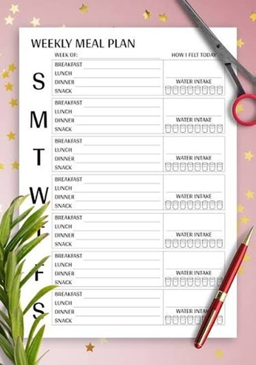

Weekly Meal Plans
The meal plans on this page are designed to help families organize dinners before the week begins. Instead of trying to decide what to make every night, visitors can use these ideas as a starting point for building a simple weekly dinner schedule.

A weekly meal plan can save time, reduce stress, and make grocery shopping more organized. Family Fork Weekly focuses on realistic meal ideas that use simple ingredients and can be adjusted for different family schedules.
This Week's Dinner Plan
| Day | Dinner Idea | Planning Note |
|---|---|---|
| Monday | Chicken tacos | Use leftover chicken for lunches or taco bowls. |
| Tuesday | Pasta with salad | Choose a quick sauce and add a simple side. |
| Wednesday | Sheet pan sausage and vegetables | Use one pan for easier cleanup. |
| Thursday | Turkey burgers with fruit | Serve with frozen vegetables or a quick salad. |
| Friday | Homemade pizza night | Use up extra toppings from the week. |
Meal Planning Focus
Each weekly plan is meant to balance convenience, budget, and family-friendly meals. The goal is not to create a perfect plan, but to make dinner decisions easier during a busy week.
- Choose meals that fit your weekly schedule.
- Plan around ingredients already in the kitchen.
- Use leftovers for lunches or another dinner.
- Keep one simple backup meal available for busy nights.
Build Your Own Weekly Plan
- Pick five dinner ideas for the week.
- Check which ingredients you already have.
- Write down missing ingredients on the grocery list.
- Plan one meal that can create leftovers.
- Keep the plan flexible in case the week changes.